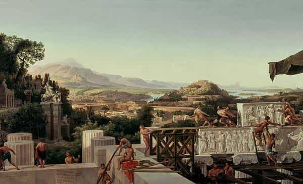
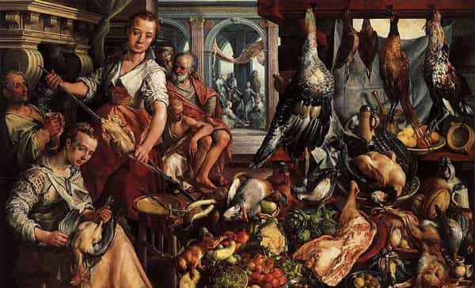
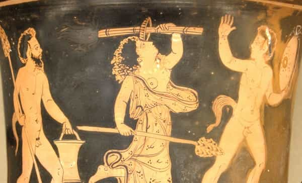

André is a young European who left his decaying country in 2012 for greener pastures. He enjoys exploring subterranean places, reading about a host of interconnected topics, and yearns for Tradition.


Ancient Greece has mesmerized modern Westerners for centuries. Enthusiastic scholars went as far as talking of a “Greek miracle,” and even if they went a bit far, it is easy to understand why they were so thrilled: ancient Greece shows us kindred heroes, who cultivated virtues, harnessed individual powers for the greater good of their cities and brotherhoods, worshipped tutelary gods, could switch from war to business, and from toiling the fields to philosophy. Or, at least, this is the feeling their works communicate. Even if we know that time tends to sort things out, and what we’ve got of the classical Greeks was perhaps the best they produced, their writings show a people who managed to unite sophistication with masculine energy.
Greeks knew about castes and Indo-European tripartite organization. Homer and Plato mention these explicitly. However, they had less social classes than other societies. The neighbouring Persian empire had a pyramidal structure, with many slaves, whipped by rather antipathetic small bosses—who themselves could have their heads cut off were the almighty despot to order it. As Leonidas says in 300: “You have many slaves, Xerxes, but few warriors.” For a warrior is not only a man wielding a weapon and the weapon doesn’t make the warrior. Only a free, worthy man deserves the label.
As they lived in city-states, Greeks were not removed from the power centers. Their city could be the vassal or part-dependent from another, more powerful city, yet they knew who was managing it. Men were what the Romans would call pater familias—head of their families, kings in their homes. As power scales remained small and people preferred excellence (arête, ἀρετή) to bullshit games, more or less everyone knew where they stood and those at the middle knew they could trust those above. In some cities, one could try to rise by engaging his own funds to, say, order—and finance—a military or commercial expedition. In others, especially Athens, a random draw would decide who was to be appointed.

In another article I said Socrates, the archetypal philosopher, undermined sociability by attacking several of its core aspects. Aiming at defeating the sophists, Socrates used their own dialectical games against them, but his contrived questions and absurd definitional standards tore common sense apart: Plato shows him rejecting various definitions of piety and bravery until he concludes we have no satisfying idea of these notions. If this is so, do we know what we should respect? Should we really aim at being courageous? Reject all landmarks and what you get is going through life with no compass.
However, when Socrates was trialed and condemned to death for messing with the gods, one of his contemporaries, Xenophon, wrote a touching compilation of Socrates’ “memorable” moments. It is a thinly veiled apology trying to prove the philosophers’ accusers wrong. Xenophon mostly insists on how much Socrates practiced virtue, respected the common gods, encouraged people to act well and taught positively by sheer example.
Indeed: Socrates owned his home, was a full citizen, went to battle at least three times during the Peloponnesian War—which seems to imply he had his shit together. Once, Xenophon recalls, Socrates explained how to gain and care about friends, another time he motivated an able yet shy man to enter politics. He also married an unbearable woman, Xanthippe, who once emptied her pot chamber on his head, just to train his own Stoic ability—the exact reverse of female hypergamy.
Retrospectively, we cannot assess the degree at which Xenophon overstated Socrates’ virtues or overdressed his stories. What we do know for sure is how much Greeks esteemed excellence in practice. It didn’t matter if Socrates wanted people to almost reject all concept and definition, as long as he still had a clear view of practical goodness, fairness, beauty, morality and the like. The city-State was a confederation of kindred small producers and families. As long as they lived the good life, Xenophon suggested, they did not need the clashes of definitions and arguments Greece would become known for.

Later Plato’s Republic extols the idea of an ideal city-State organized around three castes: the philosopher-kings-priests, the guardian-warriors and the craftsmen-growers-producers. This idea is a direct example of the Indo-European tripartition. However, this does not mean having snobbish classes or cliques hovering over the rest.
In Plato’s ideal city, everyone aims at being an aristocrat on the etymological sense—of attaining excellence as to rule, in his own field, as an excellent man. The city may have various castes, it only has one class. Only at a later stage of a degenerative history would the Greek city divide into two classes, abusive oligarchs, and short-sighted poor. What Plato describes as “not one, but two cities, living in the same place and constantly conspiring against each other” (Republic, 551d) shows how “classism” tends to divide what was united: whereas castes are founded on the concordance of inner vocation and outer social needs, not unlike complementarity between the sexes, classes come from some accumulating wealth at the expense of others and of virtue.
The two-classes divide Plato talks about, which is strikingly resembling with Karl Marx’s bourgeois-proletariat diptych, is not necessarily “capitalistic” in character. Both modern bankers and Bolsheviks aimed at maintaining it: either by having a small class owning (privately) everything or by having everything owned by public ownership, both meant dispossessing the wide majority of their own stuff. Managerialism is about stripping people from their means and controlling their life. It does not matter if this is done by a despot, a company manager, or a civil servant—serfdom is always the same.
Well, this is what Greece rejected when their cities united to reject Persian slavery. Later, as the city-states were absorbed by Alexander’s empire, they more or less maintained an organic relationship with each other. However, the empires would fall—Alexander’s was divided, while Rome proved so ripe with internecine struggles it had to transfer part of its power to a soulless bureaucracy.
As the saying goes, small is beautiful. The longer-lasting empires proved able to delegate the maximum they could to the smaller scales. And even then, there was enough space for most individuals to own their field and produce much of their own subsistence—or be self-owned craftsmen.

Only did the modern world make bureaucracy, factories, and a pyramidal structure absolutely necessary by the extant of demand, the sheer volume of goods, information and people that had to be managed. Before that, management could be done at a lower scale—especially the scale of regular men managing their own life. The Greeks talked much of virtue because they were responsible for this—they didn’t have media telling them what to do or oligarchs forcing them into conformism. (Sometimes they had this kind of despot, but these wouldn’t end prettily.) Being less numerous than their Persian neighbors, they did not need bureaucracy or massive factories. Were they lacking something?
Aristotle openly states that the better cities are mostly peopled with middle-class individuals. The wealthy despise and exploit the others, the poor are forced into obsequiousness and resentment. The former need slaves to maintain their lifestyle and haughty behavior, the latter often lack any sense of responsibility: “when poor people become the prevailing bulk, the city deteriorates and dissolves” (Aristotle, Politics, 4, 11). Only those who are in the middle can cultivate temperance and befriend each other. Along with excellence should come friendship (philia, φιλία).
Perhaps only small-scale, self-owned producers, who care about virtues and don’t take orders from either a foreign elite or low-life mobs, cam entertain a fair society. Perhaps only a middle class can entertain an equilibrated sociability.
Read Next: Men Must Be Educated In The Classics If They Wish To Regain Masculine Fortitude